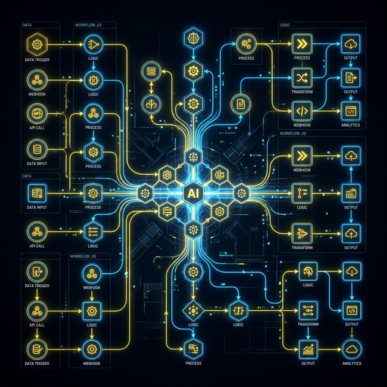

Automatización IA
Transformamos el trabajo manual repetitivo en flujos digitales autónomos. Conectamos todas tus herramientas para que trabajen solas.
Flujos Complejos con n8n
Implementamos soluciones robustas utilizando n8n (arquitecturas de nodos) para interconectar tu ERP, CRM, bases de datos y herramientas de comunicación como Slack o WhatsApp. Sin intervención humana.
Caso Práctico
Recepción de factura por correo -> Extracción óptica (OCR) por IA -> Carga automática en sistema de contabilidad -> Alerta en WhatsApp al gerente.
Agentes de IA Especializados
No solo movemos datos, les damos inteligencia. Creamos agentes conversacionales (LLMs interactivos) que atienden clientes, responden preguntas frecuentes procesando tus PDFs técnicos, o asisten a tu área comercial 24/7.
Beneficios
- Reducción del 80% en tiempo de respuesta.
- Cero errores de transcripción humana.